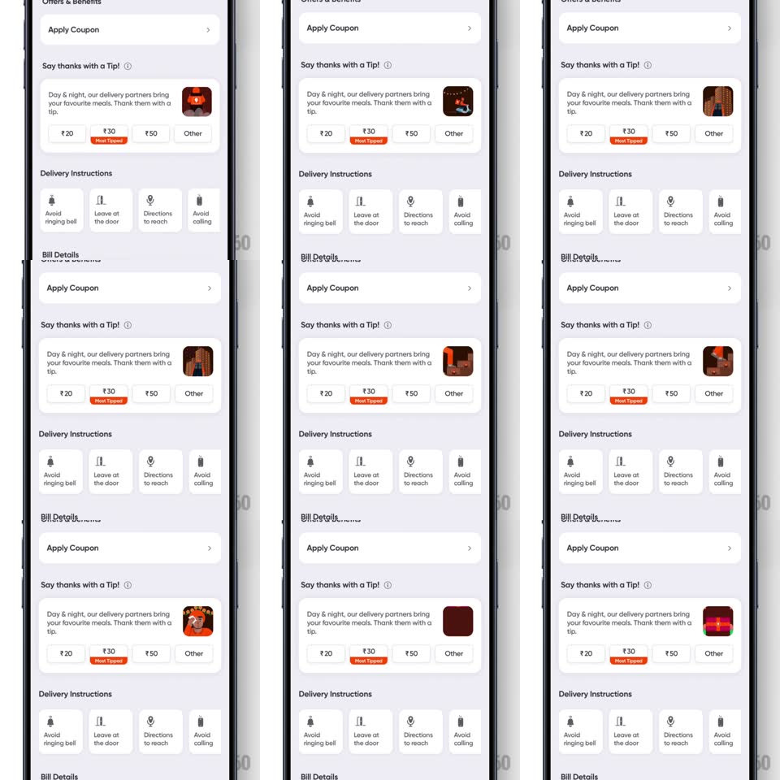

Media
Frame-by-frame

Rebuild this interaction 1:1: Swiggy's Diwali tip card - inside the "Say thanks with a Tip!" card on checkout, a small festive thumbnail loops through a Diwali slideshow (diya, lanterns, gifts, celebrations) beside the tip amount options.

Rebuild this interaction 1:1: Swiggy's Diwali tip card - inside the "Say thanks with a Tip!" card on checkout, a small festive thumbnail loops through a Diwali slideshow (diya, lanterns, gifts, celebrations) beside the tip amount options. ## Integration Integration: stack-agnostic spec - springs given as stiffness/damping, timed motions as duration + curve; map every value to your framework and animation library of choice. ## Scene The checkout sheet: "Offers & Benefits" / "Apply Coupon" rows, then the tip card - "Say thanks with a Tip!" header, copy "Day & night, our delivery partners bring your favourite meals. Thank them with a tip.", a rounded-square festive image at the right, and amount chips below (Rs20, Rs30 with a "Most Tipped" flag, Rs50, Other). Below: Delivery Instructions icons (Avoid ringing bell, Leave at the door, Directions to reach, Avoid calling), Bill Details, and the payment row (HDFC Diners Black Metal). ## Motion spec Pattern: looping festive slideshow in a card slot. - The festive thumbnail cycles images on a 2.5s cadence: each slide crossfades in (400ms) with a gentle Ken Burns drift (scale 1 -> 1.06 over the hold). - A tiny progress indicator under the thumbnail advances per slide. - Tapping an amount chip: the chip highlights (fill + border, 150ms) and the thumbnail does a quick celebratory pop (scale 1 -> 1.08 -> 1, spring ~480/20) with a sparkle burst. - The "Most Tipped" flag rides the Rs30 chip with a subtle sway. - The rest of the sheet is static; the slideshow loops indefinitely until an amount is chosen, then settles on the thank-you frame. ## Calibration - The slideshow is ambient - slow crossfades only, no hard cuts. - The thumbnail is small (about chip height); keep the motion subtle so the amounts stay the focus. ## Reduced motion Static festive image, no cycle; chip selection changes fill only. ## Don't miss - Slides are Diwali-specific: lit diyas, lantern strings, gift boxes - warm orange palette matching the brand. - The image corners match the card's radius language.